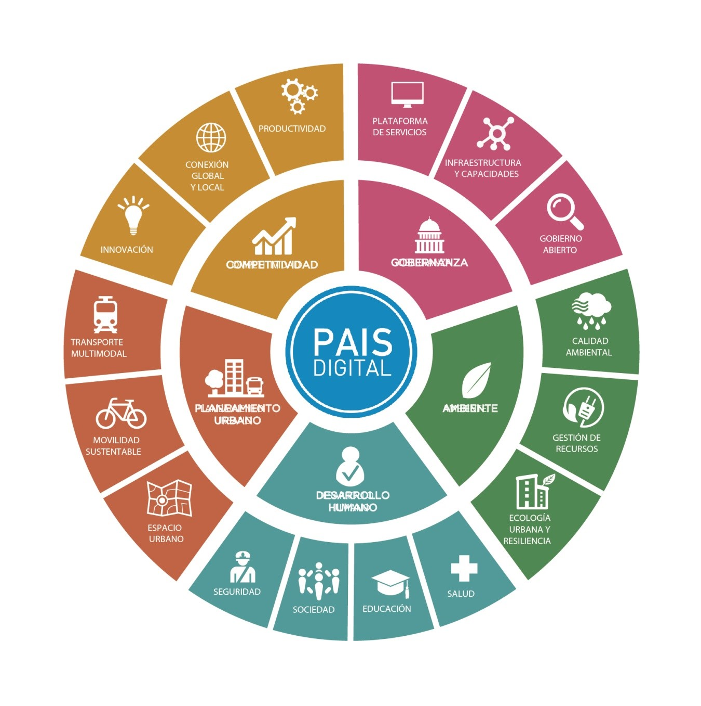

Ciudades Inteligentes
Como parte del despliegue de País Digital, impulsamos un modelo de ciudad inteligente y sustentable que pueda servir como un horizonte para los municipios de todo el país.
Una ciudad inteligente y sustentable es una ciudad innovadora que usa la información, las tecnologías de la comunicación y otros medios para mejorar la calidad de vida, la eficiencia de los servicios y la competitividad.
A su vez, las ciudades inteligentes buscan satisfacer las necesidades de las generaciones actuales y futuras respecto a la economía y los aspectos sociales y ambientales.
Pensar las ciudades con una visión global, inclusiva, eficiente y sustentable implica:
- Planificar el tendido de la infraestructura, su ordenamiento territorial y financiamiento.
- Tener una estrategia integral sobre la comunicación de los servicios.
- Dinamizar la economía, facilitando el acceso al capital humano y a otros insumos y productos.
- Preocuparse por el medio ambiente, la cultura y la participación.
- Resolver los problemas de forma innovadora, transformando las dificultades en oportunidades.
- Anticipar y superar las expectativas de sus habitantes y usuarios.
Dimensiones del modelo Ciudad Inteligente – País Digital
